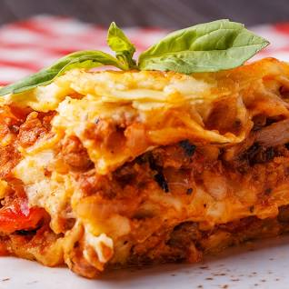

<h1> Lasagna </h1> 
<h2>A flavorful, pasta dish made in a pan. For best results, use extra cheese and grab a corner piece when served
    <ul> Ingredients:
        <li>Tomato Sauce</li>
        <li>Sheet Pasta</li>
        <li>Marscapone Cheese</li>
        <li>Mozarella Cheese</li>
    </ul>
</h2>
